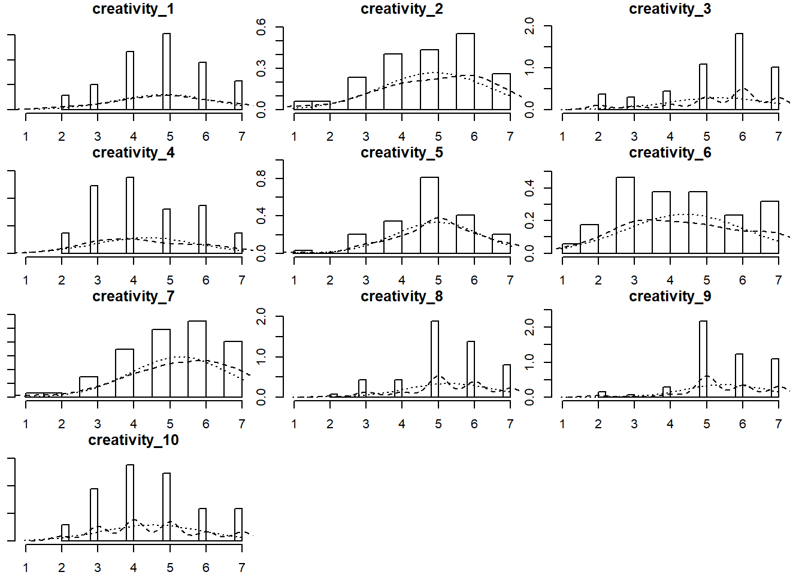
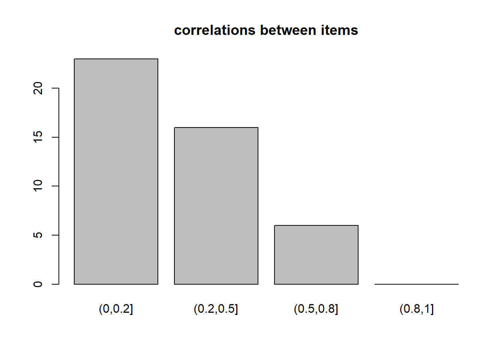
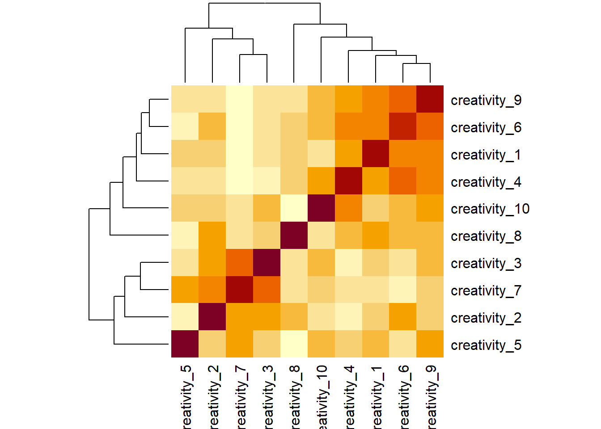
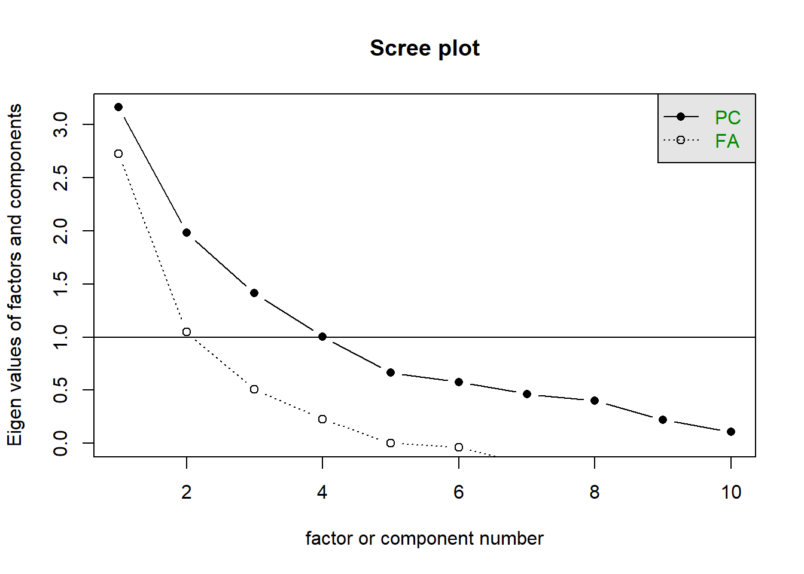
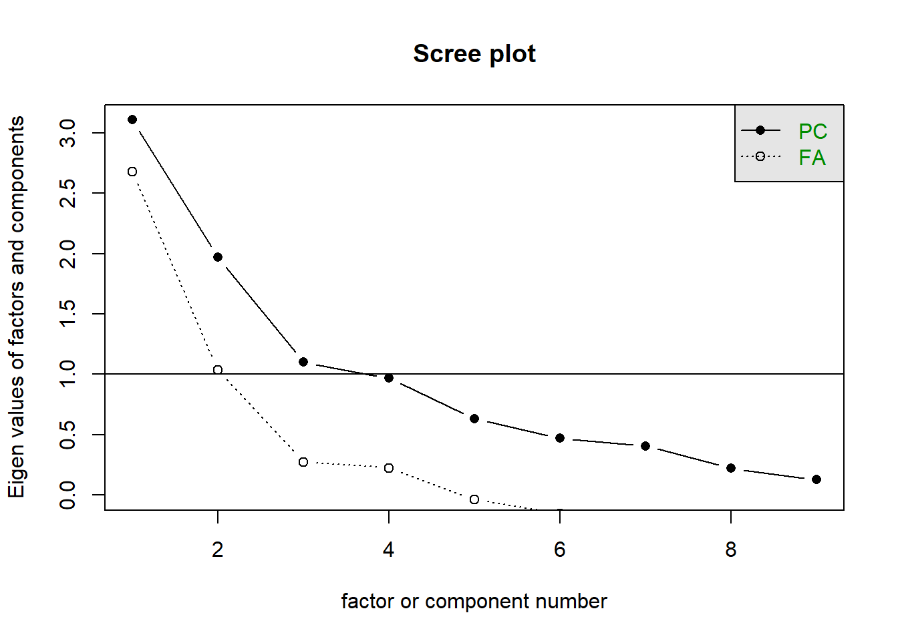
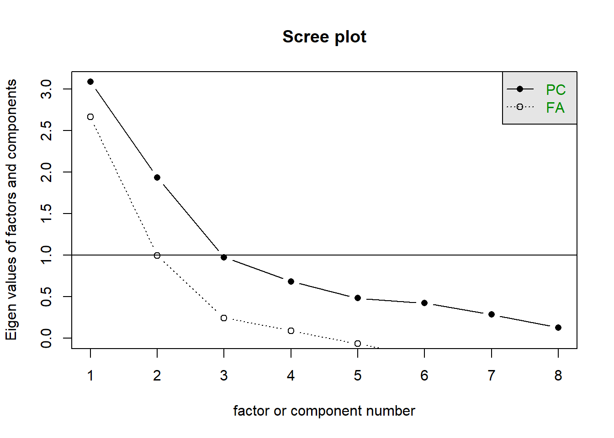
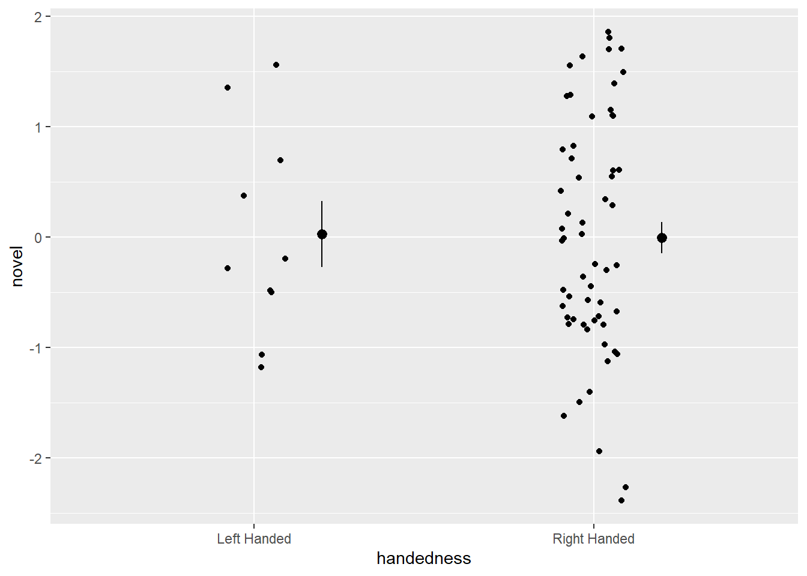
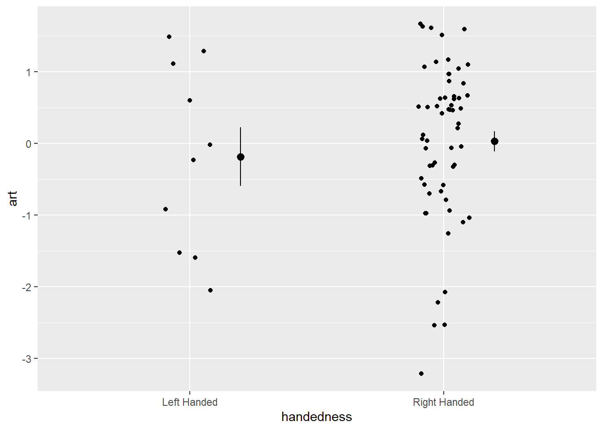

| variable | wording |
|---|---|
| creativity_1 | I enjoy finding new and unusual ways to solve familiar problems. |
| creativity_2 | I often imagine possibilities that others might not think of. |
| creativity_3 | I express myself through artistic or creative activities (e.g., art, music, writing, design). |
| creativity_4 | I like to challenge conventional ways of doing things. |
| creativity_5 | I can easily connect ideas from different areas or subjects to form something new. |
| creativity_6 | I feel comfortable taking risks or breaking rules when exploring new ideas. |
| creativity_7 | I often see beauty or meaning in things that others overlook. |
| creativity_8 | When faced with a problem, I can think of several possible solutions. |
| creativity_9 | I enjoy experimenting with new styles, ideas, or perspectives. |
| creativity_10 | My ideas often surprise people because they are unusual or original. |
creativity_workthrough
Bear in mind that we really rushed the process of creating this set of questions (see the lecture slides), and we’ve not really given much (any) time into slow and deliberate thinking about what exactly we mean by ‘creativity’.
So it’s very possible (and likely) that things here will be messy, and we might not get much of use out of it!
We got 69 responses to the questionnaire, which contained 10 questions:
# some data cleaning!
crdat <- crdat |>
mutate(across(creativity_1:creativity_10,
~case_match(.,
"strongly agree"~7,
"agree"~6,
"somewhat agree"~5,
"neither agree nor disagree"~4,
"somewhat disagree"~3,
"disagree"~2,
"strongly disagree"~1,
))) |>
select(creativity_1:creativity_10,handedness)item suitability
items showed some deviations from normality, with a number of questions (3, 8, and 9) showing clear negative skew:
# get some means, sds, and skew etc
describe(crdat[,1:10])[,c(3,4,8,9,11)] mean sd min max skew
creativity_1 4.81 1.34 2 7 -0.20
creativity_2 4.90 1.49 1 7 -0.54
creativity_3 5.35 1.43 2 7 -0.91
creativity_4 4.33 1.40 2 7 0.26
creativity_5 4.97 1.20 1 7 -0.45
creativity_6 4.41 1.67 1 7 0.06
creativity_7 5.26 1.37 1 7 -0.64
creativity_8 5.29 1.19 2 7 -0.51
creativity_9 5.51 1.12 2 7 -0.70
creativity_10 4.52 1.39 2 7 0.20# this makes some nice little histograms
multi.hist(crdat[,1:10])
correlations (visualised below) ranged in magnitude from near zero to 0.75, with the majority being weak (0 - 0.2).
# tabulating the absolute values of correlations
# get the cor matrix
cmat <- cor(crdat[,1:10])
# get the lower triangle bit of it
cmat <- cmat[lower.tri(cmat)]
# cut the absolute values, using some conventional cutoffs for sizes of correlations
corstab <- cut(abs(cmat), breaks=c(0,.2,.5,.8,1))
# and plot them!
barplot(table(corstab), main = "correlations between items")
# let's also make a heatmap
cor(crdat[,1:10]) |> heatmap()
KMO values indicate that we may have some problematic items here. The overall mean sampling adequacy was not great at all (0.53).
Let’s go ahead and examine the possible numbers of factors.
Initial evaluation of scree plots indicates (to me) that solutions from 1 to 3 factors should be investigated. MAP suggested 1 and parallel analysis suggested 3.
scree(crdat[,1:10])
initial factor models
We’ll look at 1, 2 and 3 factor solutions, with oblique rotations to allow any sub-dimensions of ‘creativity’ to be correlated. Due to the deviations from normality some of the items, we’ll use principal axis factoring (PAF) to extract the factors.
m1 = fa(crdat[,1:10],nfactors=1,fm="pa")
m2 = fa(crdat[,1:10],nfactors=2,rotate="oblimin",fm="pa")
m3 = fa(crdat[,1:10],nfactors=3,rotate="oblimin",fm="pa")
print(m1$loadings,cutoff=.3, sort=T)
Loadings:
PA1
creativity_1 0.626
creativity_4 0.681
creativity_6 0.894
creativity_9 0.861
creativity_2
creativity_3
creativity_5
creativity_7
creativity_8
creativity_10 0.399
PA1
SS loadings 2.726
Proportion Var 0.273print(m2$loadings,cutoff=.3, sort=T)
Loadings:
PA1 PA2
creativity_1 0.623
creativity_4 0.682
creativity_6 0.900
creativity_9 0.861
creativity_3 0.673
creativity_7 0.952
creativity_2 0.310 0.401
creativity_5
creativity_8
creativity_10 0.405
PA1 PA2
SS loadings 2.767 1.641
Proportion Var 0.277 0.164
Cumulative Var 0.277 0.441print(m3$loadings,cutoff=.3, sort=T)
Loadings:
PA1 PA2 PA3
creativity_1 0.599
creativity_4 0.736
creativity_6 0.850
creativity_9 0.871
creativity_3 0.685
creativity_7 0.913
creativity_8 0.625
creativity_2 0.474 0.384
creativity_5 -0.412
creativity_10 0.490
PA1 PA2 PA3
SS loadings 2.737 1.634 0.843
Proportion Var 0.274 0.163 0.084
Cumulative Var 0.274 0.437 0.521m2$Vaccounted PA1 PA2
SS loadings 2.756 1.630
Proportion Var 0.276 0.163
Cumulative Var 0.276 0.439
Proportion Explained 0.628 0.372
Cumulative Proportion 0.628 1.000m3$Vaccounted PA1 PA2 PA3
SS loadings 2.729 1.630 0.8340
Proportion Var 0.273 0.163 0.0834
Cumulative Var 0.273 0.436 0.5194
Proportion Explained 0.525 0.314 0.1606
Cumulative Proportion 0.525 0.839 1.0000The 2-factor solution looks cleanest to me, and we’re only explaining 7% more variance with the 3-factor solution.
In the 2 factor solution it kind of looks like the questions on the first factor are “doing new things”, and the questions on the second factor are the “artistic expression” questions.
There’s a weird question (q2) that loads on both..
and question 8 doesn’t load on to either!
factor 1
critems[c(1,4,6,9,10,2)][1] "I enjoy finding new and unusual ways to solve familiar problems."
[2] "I like to challenge conventional ways of doing things."
[3] "I feel comfortable taking risks or breaking rules when exploring new ideas."
[4] "I enjoy experimenting with new styles, ideas, or perspectives."
[5] "My ideas often surprise people because they are unusual or original."
[6] "I often imagine possibilities that others might not think of." factor 2
critems[c(3,7,2)][1] "I express myself through artistic or creative activities (e.g., art, music, writing, design)."
[2] "I often see beauty or meaning in things that others overlook."
[3] "I often imagine possibilities that others might not think of." It’s hard to know if this question is really capturing part of “creativity” to me.
critems[8][1] "When faced with a problem, I can think of several possible solutions."remove q8
Let’s remove question 8 and re-do all the steps.
KMO(crdat[,c(1:7,9:10)])Kaiser-Meyer-Olkin factor adequacy
Call: KMO(r = crdat[, c(1:7, 9:10)])
Overall MSA = 0.59
MSA for each item =
creativity_1 creativity_2 creativity_3 creativity_4 creativity_5
0.84 0.43 0.48 0.63 0.33
creativity_6 creativity_7 creativity_9 creativity_10
0.60 0.42 0.73 0.60 cortest.bartlett(crdat[,c(1:7,9:10)])$chisq
[1] 245
$p.value
[1] 6.64e-33
$df
[1] 36scree(crdat[,c(1:7,9:10)])
# fa.parallel(crdat[,c(1:7,9:10)])
# # suggests 2
# VSS(crdat[,c(1:7,9:10)],plot=F)
# # suggests 1
m1 = fa(crdat[,c(1:7,9:10)], nfactors=1,fm="pa")
m2 = fa(crdat[,c(1:7,9:10)], nfactors=2,rotate="oblimin",fm="pa")
print(m1$loadings,cutoff=.3, sort=T)
Loadings:
PA1
creativity_1 0.616
creativity_4 0.683
creativity_6 0.886
creativity_9 0.866
creativity_2
creativity_3
creativity_5
creativity_7
creativity_10 0.422
PA1
SS loadings 2.675
Proportion Var 0.297print(m2$loadings,cutoff=.3, sort=T)
Loadings:
PA1 PA2
creativity_1 0.613
creativity_4 0.691
creativity_6 0.898
creativity_9 0.861
creativity_3 0.692
creativity_7 0.924
creativity_2 0.415
creativity_5
creativity_10 0.424
PA1 PA2
SS loadings 2.715 1.613
Proportion Var 0.302 0.179
Cumulative Var 0.302 0.481cleaner, but q5 isn’t loading on either now..
critems[5][1] "I can easily connect ideas from different areas or subjects to form something new."remove q5
Let’s remove question 5..
# remove q5
KMO(crdat[,c(1:4,6,7,9,10)])Kaiser-Meyer-Olkin factor adequacy
Call: KMO(r = crdat[, c(1:4, 6, 7, 9, 10)])
Overall MSA = 0.6
MSA for each item =
creativity_1 creativity_2 creativity_3 creativity_4 creativity_6
0.86 0.42 0.55 0.63 0.59
creativity_7 creativity_9 creativity_10
0.41 0.74 0.60 cortest.bartlett(crdat[,c(1:4,6,7,9,10)])$chisq
[1] 227
$p.value
[1] 4.68e-33
$df
[1] 28scree(crdat[,c(1:4,6,7,9,10)])
# fa.parallel(crdat[,c(1:4,6,7,9,10)])
# # suggests 2
# VSS(crdat[,c(1:4,6,7,9,10)],plot=F)
# # suggests 1
m1 = fa(crdat[,c(1:4,6,7,9,10)], nfactors=1,fm="pa")
m2 = fa(crdat[,c(1:4,6,7,9,10)], nfactors=2, rotate="oblimin",fm="pa")
print(m1$loadings,cutoff=.3, sort=T)
Loadings:
PA1
creativity_1 0.609
creativity_4 0.687
creativity_6 0.905
creativity_9 0.851
creativity_2
creativity_3
creativity_7
creativity_10 0.418
PA1
SS loadings 2.664
Proportion Var 0.333print(m2$loadings,cutoff=.3, sort=T)
Loadings:
PA1 PA2
creativity_1 0.607
creativity_4 0.703
creativity_6 0.916
creativity_9 0.840
creativity_3 0.774
creativity_7 0.816
creativity_2 0.443
creativity_10 0.412
PA1 PA2
SS loadings 2.689 1.533
Proportion Var 0.336 0.192
Cumulative Var 0.336 0.528Here are the questions that load on to each factor.
For factor 1, they all seem to be concerned with new things.
critems[c(1,4,6,9,10)][1] "I enjoy finding new and unusual ways to solve familiar problems."
[2] "I like to challenge conventional ways of doing things."
[3] "I feel comfortable taking risks or breaking rules when exploring new ideas."
[4] "I enjoy experimenting with new styles, ideas, or perspectives."
[5] "My ideas often surprise people because they are unusual or original." For the second factor, these three questions seem to be the ones which have a bit of an arts-related concept (artistic expression, seeing beauty things, unusual imagination etc.)
critems[c(3,7,2)][1] "I express myself through artistic or creative activities (e.g., art, music, writing, design)."
[2] "I often see beauty or meaning in things that others overlook."
[3] "I often imagine possibilities that others might not think of." get some scores
fscores <- factor.scores(crdat[,c(1:4,6,7,9,10)], m2, method = "Bartlett")$scores
crdat <- crdat |> mutate(
novel = fscores[,1],
art = fscores[,2]
)ggplot(crdat, aes(x=handedness,y=novel))+
geom_jitter(height=0,width=.1)+
stat_summary(geom="pointrange", position = position_nudge(x=.2))
ggplot(crdat, aes(x=handedness,y=art))+
geom_jitter(height=0,width=.1)+
stat_summary(geom="pointrange", position = position_nudge(x=.2))
neither of these are significantly different between left and right handed people. An important thing to note here is “that absence of evidence is not evidence of absence”. So we should not write this up as “study suggests L/R handed people do not differ in creativity”.
Rather it should say “study finds no evidence that L/R handed people differ in creativity”.
t.test(novel ~ handedness, data = crdat)
Welch Two Sample t-test
data: novel by handedness
t = 0.1, df = 13, p-value = 0.9
alternative hypothesis: true difference in means between group Left Handed and group Right Handed is not equal to 0
95 percent confidence interval:
-0.676 0.743
sample estimates:
mean in group Left Handed mean in group Right Handed
0.02870 -0.00486 t.test(art ~ handedness, data = crdat)
Welch Two Sample t-test
data: art by handedness
t = -0.5, df = 11, p-value = 0.6
alternative hypothesis: true difference in means between group Left Handed and group Right Handed is not equal to 0
95 percent confidence interval:
-1.164 0.736
sample estimates:
mean in group Left Handed mean in group Right Handed
-0.183 0.031